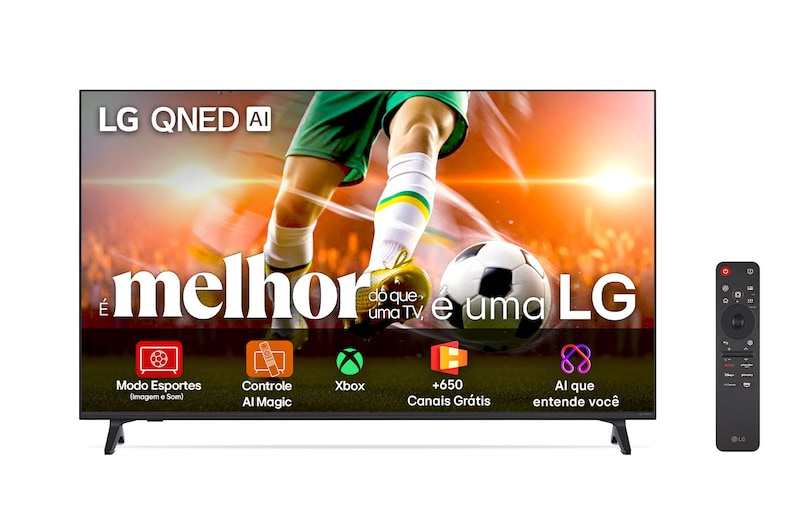
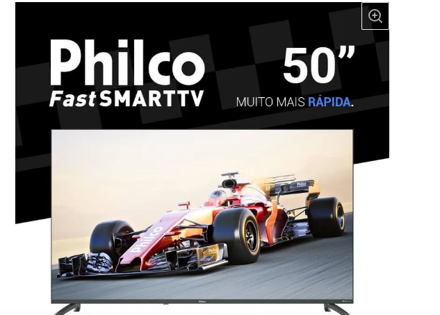
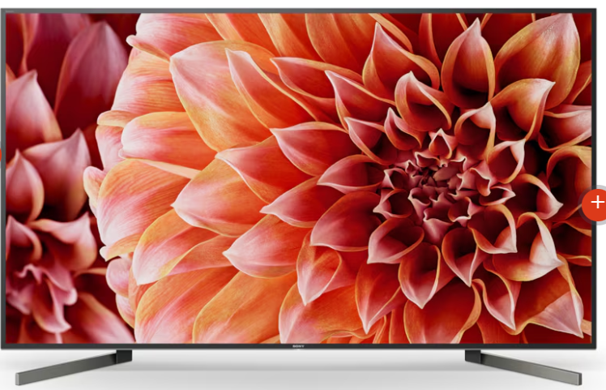

Xiomi

O que você precisa saber sobre este produto Tipo de controle remoto: De voz. Resolução máxima de vídeo em Full HD (1920x1080) para uma experiência visual imersiva. Capacidade de armazenamento de 8 GB para instalar diversos aplicativos. Memória RAM de 1 GB para desempenho fluido. Conectividade Wi-Fi dual band 2.4 GHz e 5 GHz para conexões mais rápidas. Controle de voz integrado com Google Assistant para mais comodidade. Compatível com principais aplicativos de streaming, incluindo Netflix e Disney+.
Sansung

Este combo Samsung oferece uma experiência imersiva com a Smart TV 75" Crystal UHD 4K (série U8600F/TU8000), com processador 4K, design fino e taxa de 60Hz. Acompanha a Soundbar HW-B400F, que melhora o áudio com 2.0 canais, 40W RMS, woofer integrado e conexão Bluetooth, ideal para graves mais encorpados
TCL
 As Smart TVs QLED 4K da TCL com Google TV
(modelos P7K, C645, C655)
oferecem excelente custo-benefício, destacando-se pela tecnologia de pontos quânticos (QLED) para cores vibrantes, HDR10+/Dolby Vision, e sistema Google TV com ampla biblioteca de apps. Contam com comandos de voz, processador AiPQ, HDMI 2.1, Wi-Fi dual band e Bluetooth 5.0+.
As Smart TVs QLED 4K da TCL com Google TV
(modelos P7K, C645, C655)
oferecem excelente custo-benefício, destacando-se pela tecnologia de pontos quânticos (QLED) para cores vibrantes, HDR10+/Dolby Vision, e sistema Google TV com ampla biblioteca de apps. Contam com comandos de voz, processador AiPQ, HDMI 2.1, Wi-Fi dual band e Bluetooth 5.0+.
LG

Principais recursos Tecnologia Cores Dinâmicas QNED Processador Alpha7 AI 4K Ger 8 Controle intuitivo com o controle remoto AI Magic: novo botão AI, comandos de voz e funções de arrastar e soltar. Alta resolução em uma enorme tela de TV ultragrande webOS Programa Re:New: Novas atualizações por 5 anos e segurança premiada
Philco

Tela 50" 4K LED: Imagens vividas e detalhadas com cores impressionantes • Dolby Audio: Som imersivo que transforma sua experiência em entretenimento • Chromecast built-in: Acesso fácil a apps, conteúdos e controle por voz
sony

Luz e escuridão são controladas perfeitamente nesta TV 4K HDR com tecnologia X-tended Dynamic Range PRO de alto contraste. Veja mais detalhes em tudo que assistir. Disponível em 139 cm (55"), 164 cm (65"), 189 cm (75”), 215 cm (85'') High Dynamic Range 4K Processador 4K HDR X1 Extreme X-Motion Clarity™ Android TV™